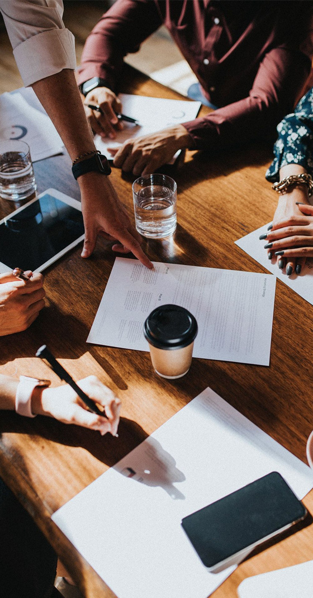
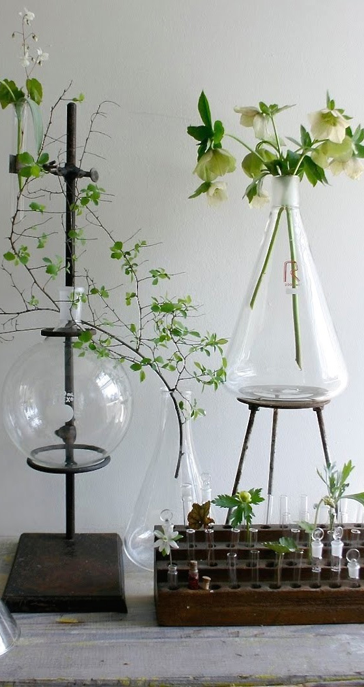
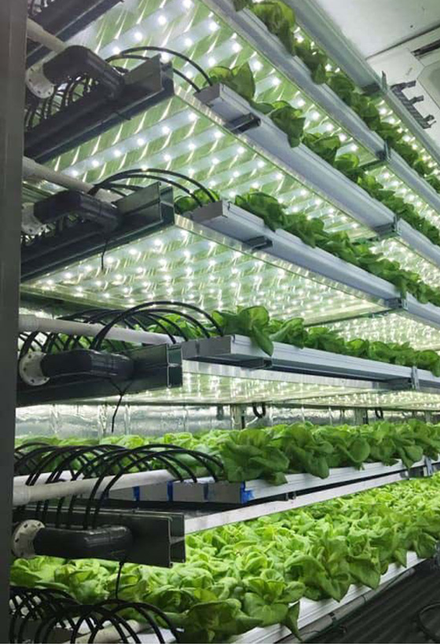

HOME > 연구소활동 > 연구분야
연구분야
식품산업의 미래를 열어갑니다.

- 연구전략
- 연구전략직무는 롯데중앙연구소의 전반적인 업무를 총괄 지원하는 곳으로 크게 연구기획, 정보조사, 관능, 인사, 교육, 총무업무로 나누어집니다.
- 우선 연구기획은 불확실한 환경 하에서 연구소의 사업 계획을 수립하는 업무입니다. 연구소 사업 계획 수립, 환경 분석, 신규 사업 제안, 신제품 관리 등 연구소의 전반적인 흐름을 관리하는 역활을 합니다.
- 정보 조사는 소비자들의 새로운 욕구를 찾아내는 일련의 과정입니다. 새로운 아이디어를 찾기 위해서 조사된 자료를 재해석하기도 하고, 소비자 인터뷰, 시장조사. 외부 전문 업체 의뢰, 소비자 그룹을 운영하기도 합니다.
- 관능 조사 연구는 목적에 적절한 검사 방법과 패널을 동원하여, 편견(Bias)을 최소화한 환경에서 준비된 설문지로 평가 결과를 기록하게 하고 그 결과를 분석하여 해석하는 업무입니다. 신제품의 출시, 원가절감, 제품의 개선 등의 의사 결정의 기준 자료로 활용되며, 제품의 개발 및 개선방향을 도출합니다.
- 인사는 채용부터 시작하여 배치, 이동, 평가, 승진, 급여관리 업무를 담당하고 있으며 교육은 연구원의 기본 소양과 직무역량 향상을 위하여 내·외부 교육을 기획하고 진행하는 업무를 맡고 있습니다. “교육이 곧 복지”라는 신조를 가지고 개인의 역량 발전이 회사 발전까지 이어지는데 조력자 역할을 하고 있습니다.
- 총무는 연구소에서 일어나는 일반적인 모든 업무(시약 및 초자, 장비 구매,해외출장 관련업무, 각종 행사, 근무복 지급, 실험실 설계 및 공사 총괄, 관재업무 등)를 담당하여 연구활동에 가장 직접적인 도움을 주는 업무를 담당합니다.
- 연구개발
- 연구개발롯데중앙연구소에서는 롯데제과㈜, 롯데칠성음료㈜, 롯데푸드㈜, ㈜롯데리아 등 롯데식품 계열사 및 유통사 PB(Private Brand)의 신제품 개발 및 기존 제품 품질 개선을 주 업무로 하고 있습니다.
- 신제품 개발업무로는 NPD(New Product Development) Process에 의해 제품 컨셉트 확보 및 검증을 기반으로 시제품 생산 및 제품 발매까지 연구원의 열정과 노력을 필요로 합니다. 일반적으로 제품 컨셉트가 확정되면 이에 부합되는 원료를 선별하여 제품을 디자인하고 규격을 설정하여 제품의 안전성 확보 및 맛에 대한 테스트를 반복하게 됩니다. 이로써 최고의 맛과 품질을 자랑하는 “롯데 제품”이 탄생하게 됩니다.
- 품질 개선 업무는 시장 트렌드 및 소비자 조사를 통해 시시각각 변화하는 소비자의 입맛에 맞춰 기존 제품의 품질을 향상시키면서 소비자의 만족도를 높이는 방향으로 진행하게 됩니다. 개선 제품을 출시하기에 앞서 연구소 내부 관능 조사 및 외부 조사기관을 통한 관능검사로 제품의 품질을 변화하는 소비자의 취향에 부합하도록 지속적인 연구와 개발이 진행됩니다.
- 신기술 특허 및 논문 발표 역시 연구원의 업무입니다. 제품 개발을 위한 연구원의 기술 및 지식을 관련 특허 출원 및 등록하고 학회 및 저널에 논문을 투고합니다. 이를 통해 롯데중앙연구소의 연구원이라는 자부심과 연구자로서의 자긍심을 느낄 수 있습니다.

- 기초연구
- 기초연구는 최신 연구설비를 갖추고 새로운 미래 식품을 연구 개발하고 있습니다. 소비자 니즈 중심 신제품을 개발하기 위하여 중장기 계획에 따라 기초연구, 소재연구, 향료연구, 식품 분석, 안전성 연구, 미생물 연구, 포장 연구, 기능성 소재 연구 등을 담당하고 있습니다.
- 기초개발 연구는 소재연구와 향료연구 크게 2개의 part로 구성되어 있습니다. 소재담당은 신소재 개발을 위하여 소재 screening부터 시작하여 효능평가, 제품적용, 특허출원, 논문 게재, 공동 연구 프로젝트 업무를 수행하고 향료 담당은 향료의 기본적 이해를 바탕으로 신규 향료 개발업무, Vanilla 연구, 안전 관리, 사내 향료 교육 업무를 수행하고 있습니다.
- 분석연구는 신제품 개발 지원과 식품안전사고의 예방 및 대응 두 부분으로 나눌 수 있습니다. 신제품 출시 전에 제품에 사용되는 원료 및 첨가물의 규격시험과 유해물질의 사전점검을 통해 안전성을 확인하고 표시된 영양성분과 기능성분 함량을 확인합니다, 또한 미생물 검사를 실시하여 안전하고 위생적인 제품이 생산될 수 있도록 신제품 개발을 지원합니다. 식품안전 사고의 발생이 예상되는 원료나 제품에 대해 주기적인 분석을 통해 사전 예방하고 식품안전사고 발생 시 이에 대한 대응 분석을 실시하는 업무도 담당합니다.
- 포장연구는 단순히 제품을 디자인하고 싸는(Wrapping) 작업이 아니라 제조, 생산, 유통시 제품에 적합하도록 포장재를 설계하는 업무를 담당하고 있습니다. 새로운 타입의 포장을 개발하고 각 사에서 요청하는 업무를 지원하면서 품질기준 확립을 위해 항상 노력하고 있습니다. 롯데알미늄, 롯데케미칼과 상호 기술협조를 하거나 국내 유수의 대학, 국가 연구기관과 연계한 공동 연구를 진행하여 포장 관련 신소재, 신기술 개발을 진행하여 제품에 도입하고 있습니다.

- 안전센터
- 롯데중앙연구소 안전센터에서는 식품 전반의 제품 및 서비스에 대한 위생안전 관리 및 위해 사고 예방을 담당하는 업무를 하고 있습니다. 업무는 크게 기획, 안전성분석, 위생점검으로 나눌 수 있습니다.
- 기획업무로는 식품사 정책 및 업무, 전략 수립 및 조정의 업무를 전담하여 계열사의 의견을 정부에 개진하는 등 중앙정부, 소비자 단체 대응 창구 역할하고 있습니다. 또한 계열사 위생 교육, Auditor 양성, 위생 스쿨 등을 운영하여 계열사의 위생 수준 향상에 이바지하고 있습니다.
- 안전성분석 업무는 식품 및 생활용품의 안전성 확인을 위하여 신규 입점 상품, 고객 컴플레인 대응 자가품질검사 등의 역할을 하며 그룹의 식품안전성 확보와 컴플레인 저감화를 위한 선도적 역할을 수행하고 있습니다.
- 위생점검 업무는 소비자와 직접 소비하는 모든 부분의 안전성을 확보하고자 제조, 유통, 외식 식품 전 부문에 위생점검을 실시하는 것입니다. 또한 HACCP 및 ISO 22000 등 선진 시스템 프로그램을 통한 과학적 안전시스템 도입을 통하여 보다 안전한 제품과 서비스를 제공하고 있습니다.
- 안전센터에서는 위해 요소의 중점 관리를 통하여 보이지 않는 곳에서 소비자에게 보다 안전하고 믿을 수 있는 최고의 제품과 최선의 서비스를 제공하도록 노력할 것입니다.